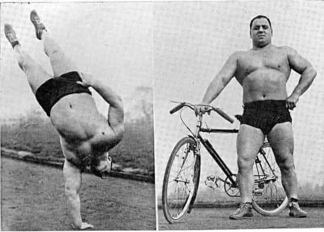
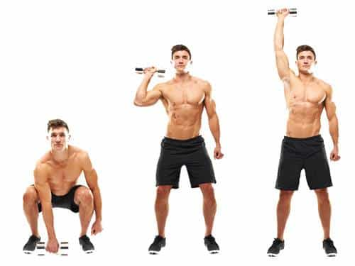
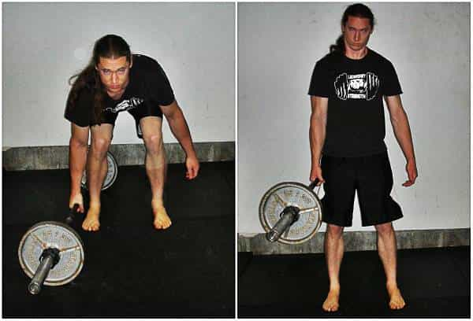
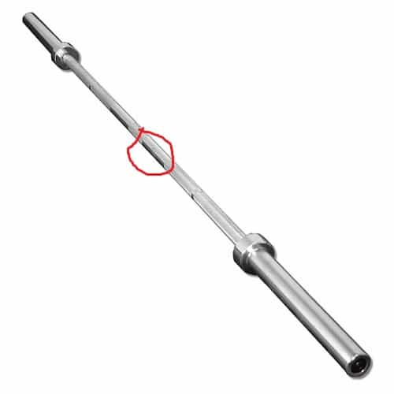
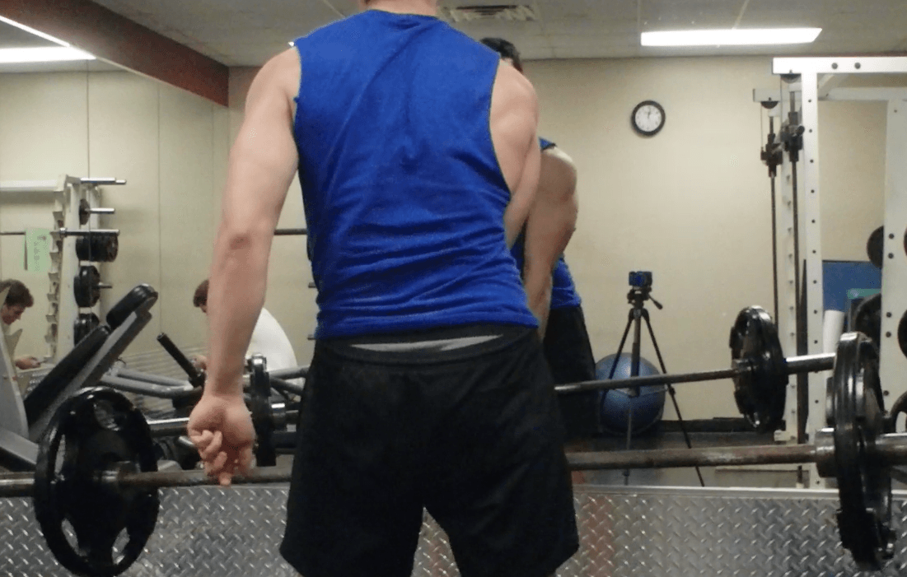

Strength is certainly a pretty cool thing to have, isn’t it? “From strength comes all things” and all that. There are certainly many advantages to having the ability to pick up really heavy stuff in a conventional way.
But if you really want to develop earth-rending muscular power, you are going to have to use some unconventional lifts as well. And the king of unconventional training is exactly what the title is implying: unilateral training!
What?
Unilateral training is exactly what it sounds like—training that is done with either one arm or leg, or further removing fingers from the equation. Traditionally, srongmen have advocated unilateral training just as much as, if not more so, than traditional training with two arms and/or legs. After all, if you can do with one hand what others need two hands to do, just think of what you can do when you actually are using both arms.
Or would you argue with someone like Bert Assirati, seen here doing one-handed handstand pushups at 250+ pounds?

How To Do It?
Of course, if you diligently read and practice the information in my articles, you already know how to do one-handed pushups and one-leg squats. Thus, the simplest way to put unilateral weight training into your routine is just to do these calisthenics with added weight: just hold a dumbbell during these exercises and the difficulty will exponentially increase.
You can also “up the difficulty” on things such as splitting apples and other forms of grip training that I have also discussed—once you can split an apple with two hands, you can try crushing an apple with one hand, as yours truly demonstrates here.
But these will only take you so far—I have always advocated both bodyweight and weighted exercises. But is it possible to do actual lifts unilaterally?
Yes
Some traditional lifts can, in fact, be done unilaterally, and can in some cases be trained to be much stronger than a normal man’s two handed lift. The two that I have learned, and will be teaching today, will be the one-handed overhead press—in its basic form, perhaps another article will discuss variants of it such as the bent press that graces the featured image and is complicated enough to require its own separate article—and the one-handed deadlift.
To do the one-handed overhead press, grab the weight and lift it to the hand’s corresponding shoulder. Just like a two-handed overhead press, push with the legs and lift it above your head. Bear in mind that the torso should slightly lean in the opposite direction of the arm (i.e., if you use the right hand, you will lean slightly to the left). The body will naturally do this, as doing so enables the oblique muscles to support the weight rather than just having the shoulder girdle do so. However, do not bend too far, or twist the torso at all, as doing so can injure the back.
If you find that you are twisting the torso, that means the support muscles of the torso—such as the aforementioned obliques, and the muscles of the lower back—are not strong enough to support the weight, and thus you should lift a lighter weight. I cannot reiterate enough, it is better to do a light weight with proper form then a heavy weight with sloppy form.

The one-handed deadlift, is a bit tricky, but I find that it has helped my deadlifting tremendously as a supplementary exercise.
To do this, load the barbell on the floor. You can either stand in front of it as in the traditional deadlift, or perpendicularly to it—the “suitcase” position. I prefer the former.

Then, using proper deadlift form (hollowing the back, keeping the head aligned, etc.) grasp the middle of the bar—and now you know why there’s that “grip spot” in the middle of the bar!

Then push through the floor with your legs and lift the bar. Make sure to keep your body as straight as possible. Then switch hands after you do the lift.

I’m only doing 135 here, and that’s far below half of my regular deadlift.
In addition to training all of the typical muscles trained by the deadlift, this will hit the obliques and muscles of the lower back as they struggle to stabilize the weight—you will likely not even be able to do half of your normal deadlift weight the first time. The unaccustomed lifter, in doing the one-handed deadlift, will probably lose control of the weight his first time. If that is the case, then there is no shame in lowering the weight —and besides, the sheer uniqueness of this lift will seem impressive in your gym.
Conclusion
There’s no reason to not unilaterally train in addition to the regular exercises you do—they’re supplements, they’re not replacing the typical training methods. A few extra reps of these will give you big strength gains.
Read More: Two Do-It-Yourself Methods For Training Your Forearms